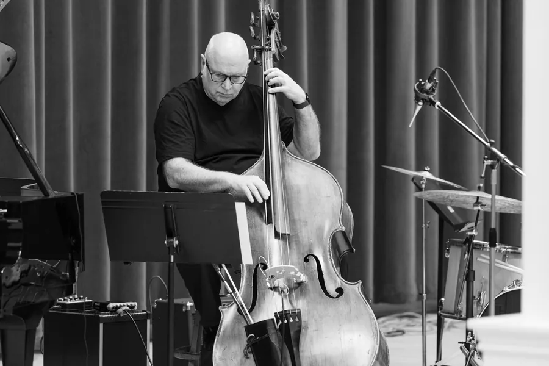
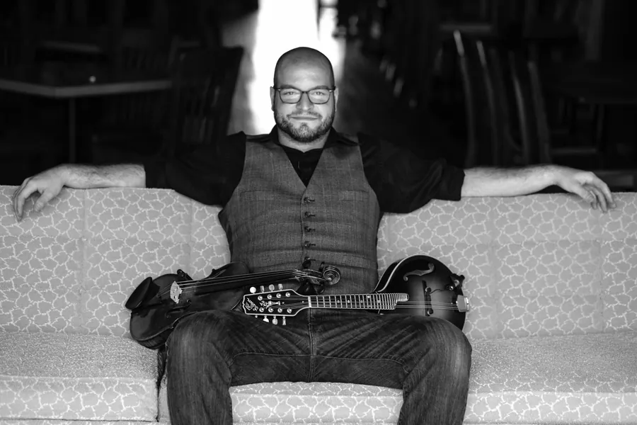

01 Listen
Standards, recorded as a trio — Jed, Wes and Brian.
-
Time remaining 0:00
-
Time remaining 0:00
-
Time remaining 0:00
-
Time remaining 0:00
-
Time remaining 0:00
02 The Circuit
Where we're riding next.
- Loading dates…
03 The Riders
Ballads, blues and bossa from the standards book — atmosphere when a room wants it, something to lean into when it doesn’t. Tunes people already know, played by people who have spent a long time with them.
We bring our own PA, we start on time, and we've never played the same set twice.
Trio or quartet. The recordings above are the trio. Add Ross on trumpet for a front line when the room calls for it. Two of us sing. We play as loud or as quiet as the night needs — dinner service, a cocktail hour, or a full club set.
Jazz Circuit Riders is new. The players aren’t.
Jed Fritzemeier
Double Bass, Bass Guitar, Vocals

His middle school orchestra director, “Doc” Daycleth Walker, got him into jazz. Two years of lessons later he joined the Doc Walker trio as a high school sophomore — his first paid work as a musician. He’s been playing jazz, on and off, for fifty years since — these days with his son Wes.
Wes Fritzemeier
Tenor Guitar, Drums, Vocals

Suzuki violin at five, and thirty years playing across the Midwest since. Tenor guitar, mandolin, violin, bass and drums. He holds weekly residencies at the Valiant and the Last Word, and plays with the Ben Daniels Band, the Screaming Goats and the Pherotones.
Brian Brill
Piano, Keys
Pianist, composer and producer, out of jazz and classical with a long-running soft spot for electronica. He toured with his own quartet, Fast Tracks, has scored for PBS, CBS Sports and Turner Classic Movies, and has produced or arranged for artists including Billy Strings. Six records of his own, most recently a 2024 work for choir and orchestra.
04 Booking
Tell us the room, the date, and how long you need us.
Clubs, weddings, private events, festivals. We travel.